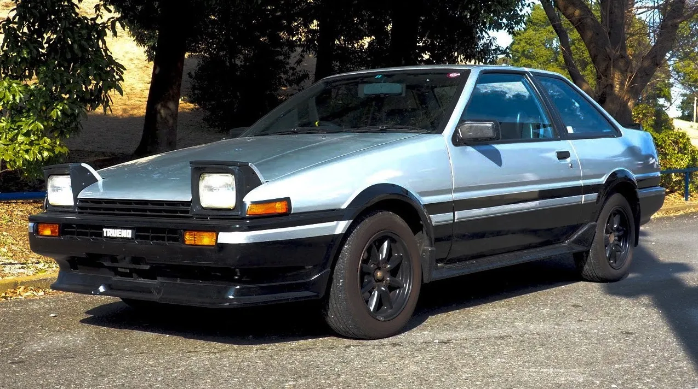
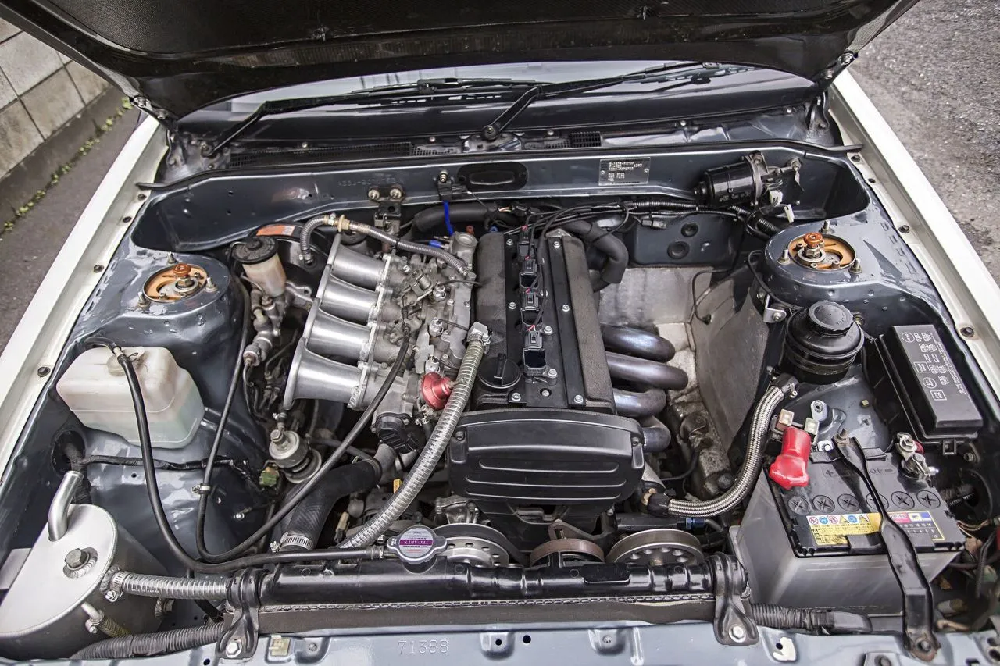
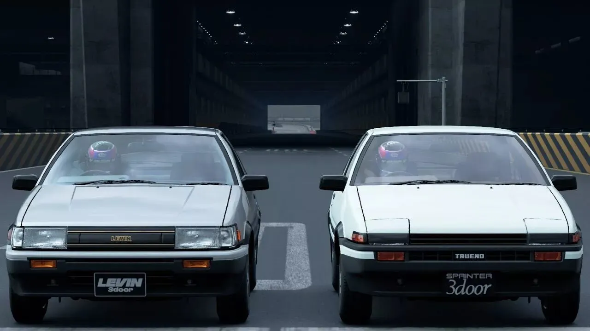
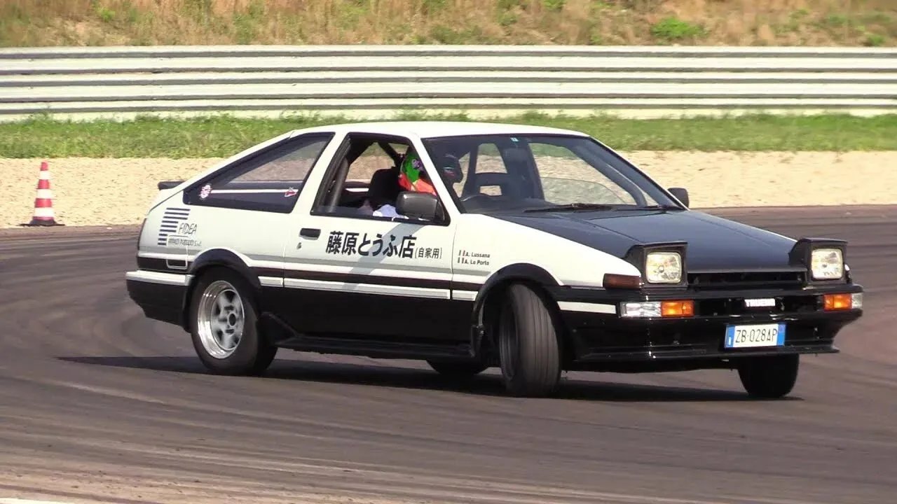
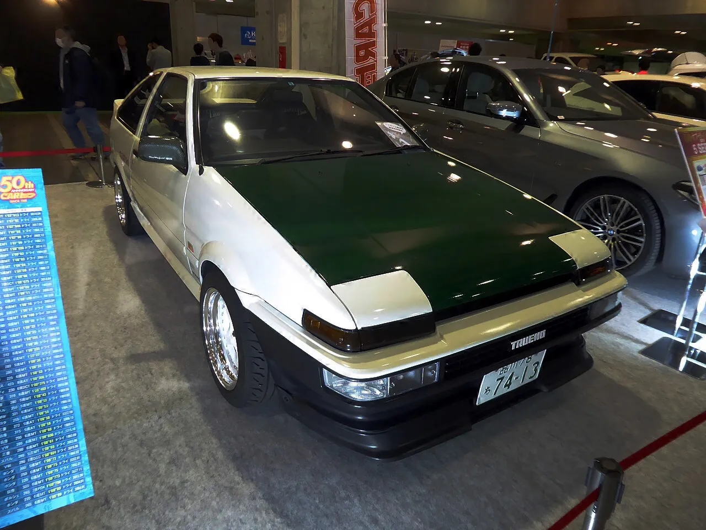

Общие данные
- Производитель:Toyota
- Годы производства:Май 1983 — 1987
- Сборка:Завод Такаока, Тоёта, Япония
- Иные обозначения:Toyota Corolla Levin / Toyota Sprinter Trueno
- Тип кузова:2-дв. купе / 3-дв. лифтбэк
- Колёсная формула:4×2 (задний привод)
История машины
Toyota AE86 — это небольшой заднеприводный автомобиль, выпускавшийся с 1983 по 1987. Несмотря на скромные характеристики, он получил культовый статус благодаря своему инженерному потенциалу, спортивным успехам и популярности в дрифт-культуре.
AE86 — это пятое поколение семейства Toyota Corolla и последний заднеприводный автомобиль в этой линейке. В 1980-х годах мир переходил на передний привод, но инженерам удалось убедить руководство сохранить задний привод для спортивных версий, чтобы сделать машину более интересной для вождения. На внутреннем рынке Японии автомобиль продавался в двух почти идентичных версиях: Corolla Levin и Sprinter Trueno.
В первой половине 1980-х годов Япония переживала пик «экономического пузыря» — страна богатела, и молодёжь получила свободу. AE86 стала идеальным символом: доступнее чистых спорткаров, но дарила то же драйверское удовольствие. Для японского студента «Хачироку» была пропуском в мир взрослой свободы. Тысячи таких купе каждую ночь собирались на парковках у магазинов или в гаражах кварталов.
Благодаря почти идеальной развесовке (53:47) и живому мотору, AE86 до сих пор считается эталоном управляемости и «школой дрифта».
Двигатель 4A-GE (серия T-VIS)

- 1,6-литровый (1587 см³) 16-клапанный атмосферный мотор, созданный совместно с инженерами Yamaha.
- Главная фишка — система T-VIS (переменная геометрия впуска), открывающая дополнительные каналы после 4200 об/мин, делая подхват мощности резким, как «включение турбины».
- В версии для AE86 мотор развивал 130 л.с. при 6600 об/мин и мог спокойно крутиться до 7800 об/мин.
- Благодаря твердой головке блока и мощному стальному коленвалу, 4A-GE стал практически «вечным» и выдерживал огромный тюнинг без капитального ремонта.
Технические характеристики AE86 (купе Trueno/Levin)

- Тип кузова: 2-дверное купе или 3-дверный лифтбек
- Привод: задний
- Длина кузова: 4205 мм, ширина — 1625 мм
- Снаряженная масса: около 950–970 кг
- Развесовка по осям: 53 на 47 процентов в пользу передней части
- Подвеска спереди: МакФерсон, сзади — четырёхрычажная с жесткой балкой
- Коробка передач: 5-ступенчатая механическая (модель Т50) или 4-ступенчатая автоматическая
- Блокировка дифференциала (LSD): опционально на версии GT-APEX
- Тормоза: дисковые спереди и сзади
- Максимальная скорость: примерно 205 км/ч
- Разгон до сотни: около 8,5 секунды по данным того времени
Дрифт и наследие Кэййти Цутяна
Настоящую революцию автомобиль совершил в японском горном дрифте. Легендарный гонщик Кэййти Цутян выбрал AE86 в качестве учебного пособия для отработки техники контролируемого заноса, показав, что на этой машине можно проходить повороты боком быстрее, чем «правильно». Кэййти Цутян — легенда дрифта, именно он превратил AE86 в икону горных серпантинов, показав всему миру возможности управляемого заноса.
В мире автоспорта AE86 прославилась не как самая мощная, а как самая «честная» и обучающая машина. В середине 80-х она неожиданно для соперников доминировала в кольцевых гонках.
Ралли и кольцевые гонки
Помимо дрифта, AE86 оставила яркий след в ралли. Благодаря легкому кузову и идеальному балансу, она отлично держалась на гравийных и асфальтовых этапах чемпионата мира (WRC) в классе Group A. Частные команды по всему миру выбирали «Хачироку» за невероятную живучость: мотор не перегревался в африканской жаре, а подвеска выдерживала прыжки на финских лесных дорогах.
В кольцевых гонках в 1986 году пилот Крис Ходжете принес AE86 титул Чемпиона Европы по турингу (ETCC), выступая против более современных переднеприводных конкурентов. В Японии она стала королевой местных гоночных серий, а на марафонах типа 24 часа Нюрбургринга её фирменный вой мотора звучал ещё долгие годы после снятия с производства.

Где можно купить Toyota AE86 сегодня
В России
На «Дроме» или «Авито» средняя цена ходового автомобиля: 2 000 000 – 3 500 000 ₽
Редкие отреставрированные экземпляры: от 3,5 до 4 млн ₽ и выше.
Объявления до 400 000 ₽ — это машины на запчасти или требующие полной реставрации.
В Японии (аукционы)
Требуют ремонта: до 1 000 000 иен (~460 000 ₽)
Ходовое состояние: 1,5–2,5 млн иен (~700 000 – 1 160 000 ₽)
Отличное / коллекционное: 2,5–5 млн иен и выше (~1 160 000 – 2 300 000 ₽)
Основные площадки: CAA, USS, Yahoo! Japan. Имейте в виду, что растаможка и доставка добавляют к стоимости.
